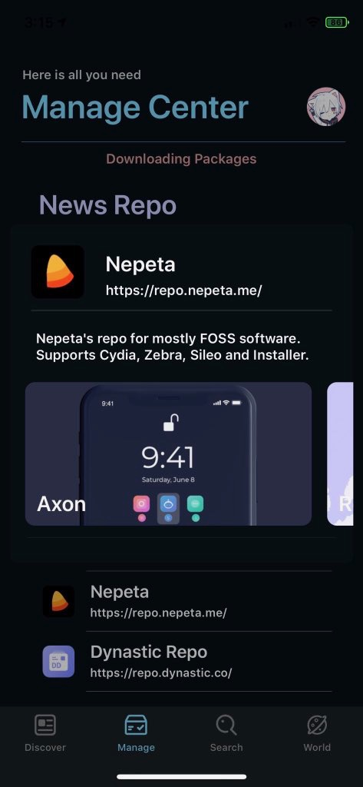
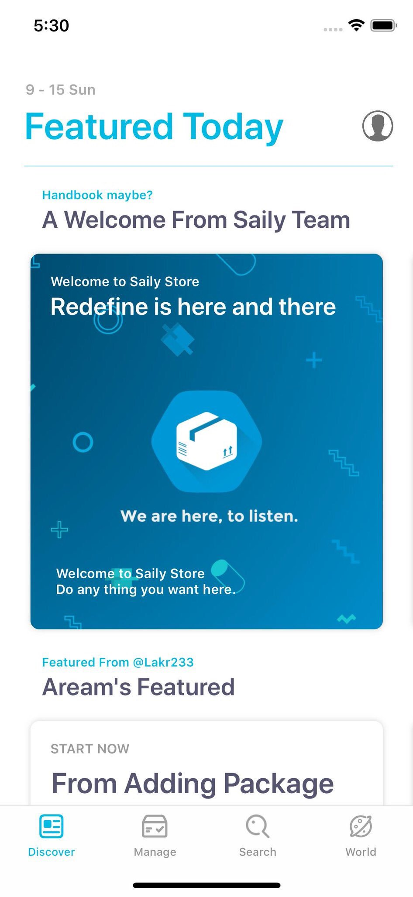
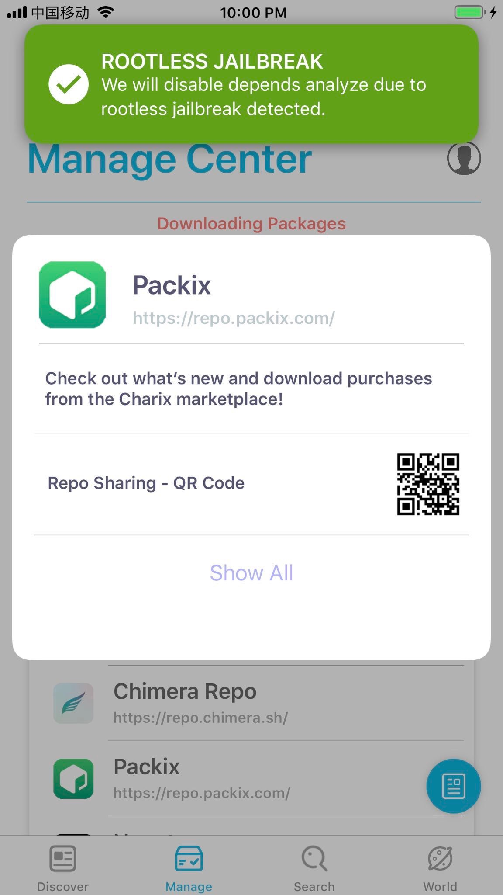
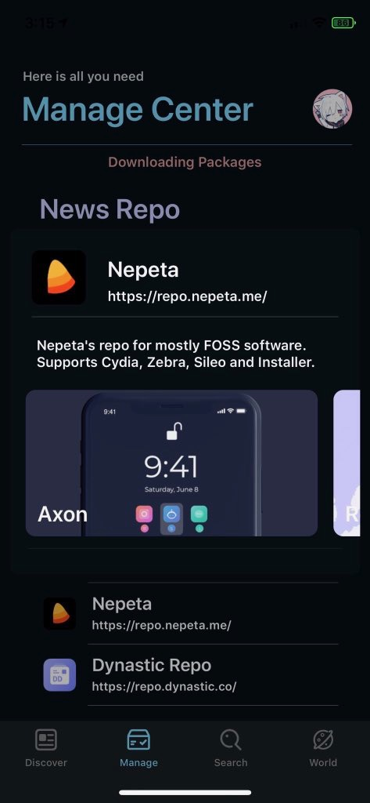
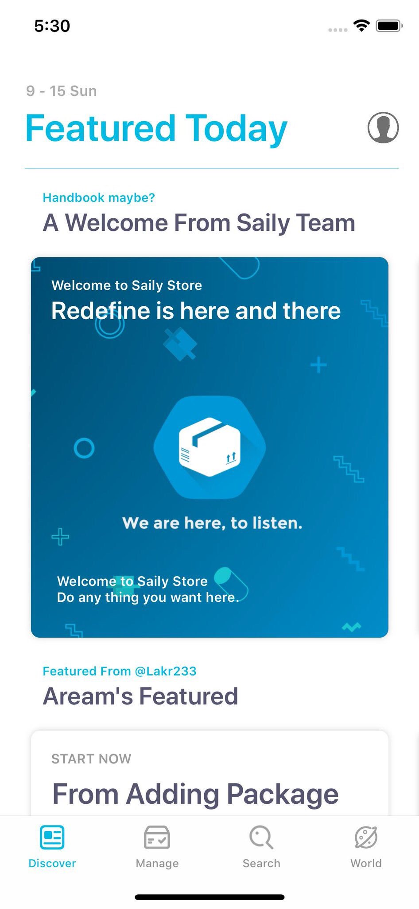
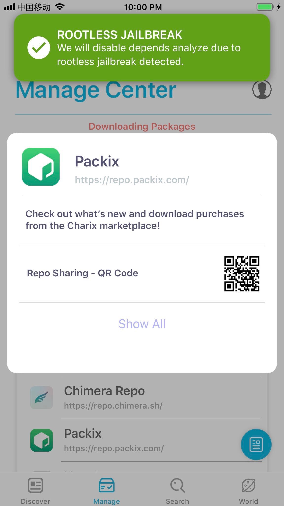

Developer
Saily Team
Saily is a modern, fast, and beautiful package manager for jailbroken devices running iOS or iPadOS 13 and up and is developed by Lakr Aream and Brecken Lusk.
 





The goal behind Saily's development was simple: to make a new alternative package manager that was different from Cydia and Sileo in many new and unique ways. We also wanted to create something that could be used by RootlessJB users, which was missing a proper package manager at the time. We succeeded with that and then proceeded to come up with new and unique features that would make a package manager better, such as News Repos, which was later improved upon by the PostBox team. Going forward, we hope to continue to bring new and exciting innovations to the jailbreaking scene while continuing to further development on Saily, which we plan to bring to iOS and iPadOS 14 later this year.
Saily was built from the ground up, meaning that no code was borrowed from old, outdated, and deprecated package managers. This does wonders for Saily's performance, minimizes bugs, and allows for newer and more secure technology to be used. Saily encourages developers to use native depictions, but also supports web depictions for those that dont. Saily can then display those web depictions as native depictions thanks to its built in depiction framework. Payments through Saily can only be made through a secure network, preventing tweaks like CyDown from being able to download paid packages for free.
Because of Saily's modern and up-to-date code and utilities, it is able to refresh sources and install packages at record speeds, without compromising your devices security in any way. Even Saily's earliest beta could refresh repos containing a total of 21,403 packges in just under 3 seconds. Just imagine what it can do now.
Saily was designed to be fun and satisfying to use. From the beginning, we realized that one thing many package managers were missing was a fun design that was unique and playful. We have designed and developed Saily to be unique in this sense, while also keeping a someone native-feeling layout in an attempt to prevent users from becoming overwhelmed or confused.
• Includes support for all jailbreaks
• Built to work alongside your other package managers
• Supports both Native as well as Web Depictions
• Add and manage repositories without limitation or restriction
• Import all of your Sources from Cydia, Sileo, Zebra, and Installer
• Clean and stable packaging through the use of CI Machine
• Secure payment system with support for paid packages
• Ability to randomize device information for free packages
• Stores your repo and package records for up to two weeks
• Automatically refresh repos in the background
• Quick Actions via the Settings panel
• Fully open-sourced under MIT License
• Much, much more...